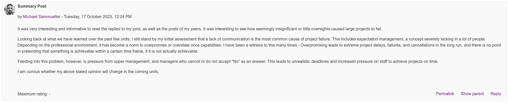
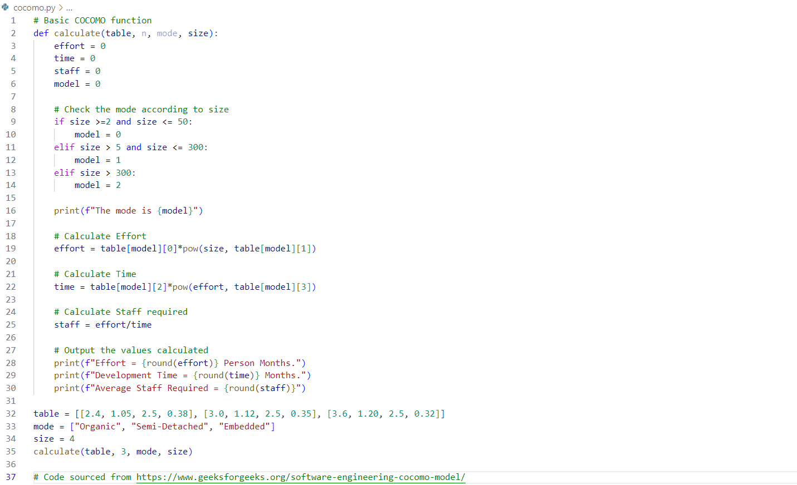

Unit 4: Artefacts
Collaborative Discussion
Part of this unit was to make a summary post based on peer responses, as well as the knowledge we have gathered over the past few units:
Summary Post
Python Estimation Program
Task 1: Create a python program that implements one of the estimation methods covered in the Lecturecast. You can use the Jupyter Notebook workspace in Codio and save your work to your GitHub repository.
One of the methods covered in the Lecturecast was COCOMO. In order to get an idea about how to implement COCOMO in Python, I conducted a little research and stumbled across this implementation on GeeksforGeeks.com.
One of the most important aspects to remember about COCOMO, is that its estimations heavily rely on LOC (lines of code). If this metric is not available, then it is relatively difficult to use the COCOMO model to predict cost.
Task 2: Read the articles by Verner et al (2014) and Anton & Nucu (2020) and then answer the following questions:
- What are the main risks that the authors identify?
- Which of the frameworks discussed in the Unit 3 Lecturecast would you use to capture and categorise the risks?